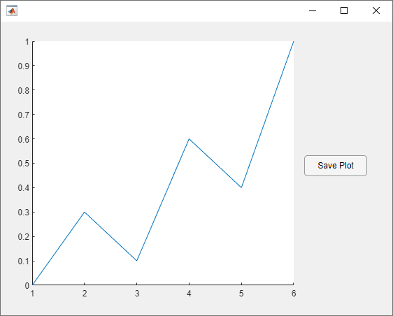

exportgraphics
Export figure or plot
Description
exportgraphics(
exports the contents of the graphics object specified by obj,filename)obj to a file.
The graphics object can be any type of axes, a figure, a standalone visualization, a tiled
chart layout, or a container within the figure. The resulting graphic is tightly cropped to
a thin margin surrounding your content.
exportgraphics(
specifies additional options for saving the file. For example,
obj,filename,Name,Value)exportgraphics(gca,"myplot.jpg","Resolution",300) saves the contents of
the current axes as a 300-DPI image file.
Examples
Create a line plot and get the current axes. Then save the contents of the axes as a JPEG file.
plot(rand(5,5))
ax = gca;
exportgraphics(ax,'LinePlot.jpg')
Display an image and get the current axes. Then save the contents of the axes as a 300-DPI JPEG file.
I = imread('peppers.png'); imshow(I) ax = gca; exportgraphics(ax,'Peppers300.jpg','Resolution',300)

Since R2025a
If you want to specify the width and height for your exported file, create a figure that has a similar size and aspect ratio. For example, create a stem plot in a figure that is 500-by-400 pixels in size. Then export the figure as a 500-by-400-pixel PNG file, including 10 pixels of padding on each side.
f = figure; f.Position(3:4) = [500 400]; stem(1:10,"filled",LineWidth=2) ylim padded exportgraphics(f,"stemplot.png",Units="pixels", ... Width=500,Height=400,Padding=10)

Display a plot with an annotation that extends beyond the bounds of the axes. Save the contents of the figure as a PDF file.
plot(1:10) annotation('textarrow',[0.06 0.5],[0.73 0.5],'String','y = x ') f = gcf; exportgraphics(f,'AnnotatedPlot.pdf')

Display a bar chart and get the current axes. Then save the contents of the axes as a PDF containing only vector graphics.
bar([10 22 31 43]) ax = gca; exportgraphics(ax,'BarChart.pdf','ContentType','vector')

To create multipage PDFs, set the 'Append' name-value argument to true.
For example, create a line plot and save the contents of the axes to the file myplots.pdf.
plot([0 0.3 0.1 0.6 0.4 1])
ax = gca;
exportgraphics(ax,'myplots.pdf')
Next, create a bar chart and save the contents of the axes as a second page in myplots.pdf.
bar(1:10) exportgraphics(ax,'myplots.pdf','Append',true)

Plot a parabola with one marker. Change the location of the marker with every iteration of a for loop, and capture the changes as frames in an animated GIF.
x = -10:0.5:10; y = x.^2; p = plot(x,y,"-o","MarkerFaceColor","red"); for i=1:41 p.MarkerIndices = i; exportgraphics(gca,"parabola.gif","Append",true) end

Display two plots in a tiled chart layout. Then save both plots as a PDF by passing the TiledChartLayout object to the exportgraphics function.
t = tiledlayout(2,1);
nexttile
plot([1 2 3])
nexttile
plot([3 2 1])
exportgraphics(t,'Layout.pdf')
If you want to save just one of the plots in the layout, call the nexttile function with the axes return argument. Then pass the axes to the exportgraphics function.
Display a heatmap chart. Then save the chart as a PDF containing only vector graphics with a transparent background.
h = heatmap(rand(10,10)); exportgraphics(h,'Hmap.pdf','BackgroundColor','none','ContentType','vector')

Create a program file called saveapp.m that displays a plot and a
button for saving the axes content. In the callback function for the button, call the
uiputfile function to prompt the user for a file name and location.
Then call the exportgraphics function with the full path to the
specified file.
function saveapp f = uifigure; ax = uiaxes(f,"Position",[25 25 400 375]); plot(ax,[0 0.3 0.1 0.6 0.4 1]) b = uibutton(f,"Position",[435 200 90 30],"Text","Save Plot"); b.ButtonPushedFcn = @buttoncallback; function buttoncallback(~,~) filter = {"*.jpg";"*.png";"*.tif";"*.pdf";"*.eps"}; [filename,filepath] = uiputfile(filter); if ischar(filename) exportgraphics(ax,[filepath filename]); end end end
Run the app by calling the saveapp function. When you click the
Save Plot button in the app, a dialog box prompts you for a
file name and location. Then the axes content is saved in the specified file. The area
surrounding the axes, including the button, is not included in the file.
saveapp

Input Arguments
Name-Value Arguments
Specify optional pairs of arguments as
Name1=Value1,...,NameN=ValueN, where Name is
the argument name and Value is the corresponding value.
Name-value arguments must appear after other arguments, but the order of the
pairs does not matter.
Before R2021a, use commas to separate each name and value, and enclose
Name in quotes.
Example: exportgraphics(gca,"myplot.jpg","Resolution",300) saves the
contents of the current axes to a 300-DPI image file.
Type of content to store when saving as an EMF, EPS, or PDF file. Specify the value as one of these options:
"auto"— MATLAB controls whether the content is a vector graphic or an image."vector"— Store the content as a vector graphic that can scale to any size. If you are saving a PDF file, embeddable fonts are included in the file."image"— Store the content into one or more images within the file.
Note
The
"vector"option is not supported for JPEG, TIFF, PNG, and GIF files.If you specify the
"vector"option, some visualizations might contain stray lines or other artifacts.
Resolution in dots per inch (DPI), specified as a whole number that is greater
than or equal to 1.
Specifying the resolution has no effect when the ContentType
is "vector".
Data Types: single | double | int8 | int16 | int32 | int64 | uint8 | uint16 | uint32 | uint64
Background color, specified as "current",
"none", an RGB triplet, a hexadecimal color code, or a color
name. The background color controls the color of the margin that surrounds the axes or chart.
A value of
"current"sets the background color according to the parent container's color. If you explicitly set the color of the parent container by setting a property—for example, by creating a red figure usingfigure(Color="red")—then the exported file uses that color.If you do not set the color of the parent container, then the background color of the exported file depends on the theme. For the light theme, the background is white. For the dark theme, the background is dark gray, almost black. (since R2025a)
A value of
"none"sets the background color to transparent, white, or dark gray (almost black), depending on the value ofContentType:If
ContentType="vector", the background color is transparent.If
ContentType="image", the background color is white for light-themed figures and dark gray (almost black) for dark-themed figures.If
ContentType="auto", MATLAB sets the background color according to the heuristic it uses to determine the type content to export.
Alternatively, specify a custom color or a named color.
Custom Colors and Named Colors
RGB triplets and hexadecimal color codes are useful for specifying custom colors.
An RGB triplet is a three-element row vector whose elements specify the intensities of the red, green, and blue components of the color. The intensities must be in the range
[0,1]; for example,[0.4 0.6 0.7].A hexadecimal color code is a character vector or a string scalar that starts with a hash symbol (
#) followed by three or six hexadecimal digits, which can range from0toF. The values are not case sensitive. Thus, the color codes"#FF8800","#ff8800","#F80", and"#f80"are equivalent.
Alternatively, you can specify some common colors by name. This table lists the named color options, the equivalent RGB triplets, and hexadecimal color codes.
| Color Name | Short Name | RGB Triplet | Hexadecimal Color Code | Appearance |
|---|---|---|---|---|
"red" | "r" | [1 0 0] | "#FF0000" |
|
"green" | "g" | [0 1 0] | "#00FF00" |
|
"blue" | "b" | [0 0 1] | "#0000FF" |
|
"cyan"
| "c" | [0 1 1] | "#00FFFF" |
|
"magenta" | "m" | [1 0 1] | "#FF00FF" |
|
"yellow" | "y" | [1 1 0] | "#FFFF00" |
|
"black" | "k" | [0 0 0] | "#000000" |
|
"white" | "w" | [1 1 1] | "#FFFFFF" |
|
This table lists the default color palettes for plots in the light and dark themes.
| Palette | Palette Colors |
|---|---|
Before R2025a: Most plots use these colors by default. |
|
|
|
You can get the RGB triplets and hexadecimal color codes for these palettes using the orderedcolors and rgb2hex functions. For example, get the RGB triplets for the "gem" palette and convert them to hexadecimal color codes.
RGB = orderedcolors("gem");
H = rgb2hex(RGB);Before R2023b: Get the RGB triplets using RGB =
get(groot,"FactoryAxesColorOrder").
Before R2024a: Get the hexadecimal color codes using H =
compose("#%02X%02X%02X",round(RGB*255)).
Append content to existing file, specified as true or
false.
This option is useful for:
Exporting the content as the last page of an existing PDF file. Call
exportgraphicswith theAppendoption multiple times to add multiple pages.Exporting the content as the last frame in an animated GIF file. Call
exportgraphicswith theAppendoption multiple times to add multiple frames.
Note
You can use the Append argument to create basic animated
GIF files from charts that have the same axes limits. If the axes limits differ
between charts, consider using axis("manual") or the xlim, ylim, or zlim functions to freeze the axes
limits when creating your charts.
To create animations of images or more elaborate graphics, use imwrite. For more information on
using imwrite, see Write Animated GIF.
If you set the Append option to false with
the name of an existing file, MATLAB overwrites the contents of the file with the new content.
This option supports PDF and GIF files only.
Color space of the saved graphic, specified as "rgb",
"gray", or "cmyk".
"rgb"— Export truecolor RGB content."gray"— Convert the content to grayscale."cmyk"— Convert the content to cyan, magenta, yellow, and black (CMYK). This color space is only supported for EPS files.
Since R2025a
Width of the saved graphic, specified as "auto" or a positive
number. To specify a custom width, specify a number. By default, the units are pixels
for image files and points for vector graphics files. You can specify different units
by using the Units name-value argument. All width values include
any padding around the perimeter of the graphic. The saved graphic contains a small
margin of padding by default, but you can change it by specifying the
Padding name-value argument.
A Width value of "auto" selects a width
that preserves the aspect ratio based on the Height value.
Note
When you save image files, the default Width
("auto") depends on the Resolution
name-value argument, which is 150 by default. To use the
default width and match the on-screen size more closely, specify the
Resolution name-value argument as the value returned by
get(groot,"ScreenPixelsPerInch"). For example:
sppi = get(groot,"ScreenPixelsPerInch"); exportgraphics(gca,"myplot.png","Resolution",sppi)
Since R2025a
Height of the saved graphic, specified as "auto" or a positive
number. To specify a custom height, specify a number. By default, the units are pixels
for image files and points for vector graphics files. You can specify different units
by using the Units name-value argument. All height values include
any padding around the perimeter of the graphic. The saved graphic contains a small
margin of padding by default, but you can change it by specifying the
Padding name-value argument.
A Height value of "auto" selects a height
that preserves the aspect ratio based on the Width value.
Note
When you save image files, the default Height
("auto") depends on the Resolution
name-value argument, which is 150 by default. To use the
default height and match the on-screen size more closely, specify the
Resolution name-value argument as the value returned by
get(groot,"ScreenPixelsPerInch"). For example:
sppi = get(groot,"ScreenPixelsPerInch"); exportgraphics(gca,"myplot.png","Resolution",sppi)
Since R2025a
Padding around the saved graphic, specified as one of the values in this table.
| Value | Description | Example |
|---|---|---|
| Include enough padding to include x- and y-axes labels, a title, and decorations such as legends and colorbars. | Create a bar chart and export it as an image with
The gray border around the image outlines the captured region. The border is not part of the saved image.
bar(1:5) title("My Bar Chart") ax = gca; exportgraphics(ax,"tightpadding.png")
|
| Include the same relative amount of padding as shown in the figure window. | Create a bar chart and export it as an image with
The gray border around the image outlines the captured region.
bar(1:5) title("My Bar Chart") ax = gca; exportgraphics(ax,"figurepadding.png","Padding","figure")
|
Positive number | Include the specified amount of padding. By default, the units
are pixels for image files and points for vector graphics files. You can
specify different units by using the | Create a bar chart and export it as an image with 100 pixels of padding. The gray border around the image outlines the captured region.
bar(1:5) title("My Bar Chart") ax = gca; exportgraphics(ax,"100pixelpadding.png","Padding",100)
|


Since R2025a
Units for the Width, Height, and
Padding values, specified as "auto",
"pixels" (for images only), "inches",
"centimeters", or "points" (where 1 point =
1/72 inch).
The default value of "auto" sets the units to
"pixels" for image files and "points" for
vector graphics files.
Since R2025a
Preserve original aspect ratio, specified as "auto",
"on", or "off".
A value of "auto" enables exportgraphics
to choose either "on" or "off", depending on
whether you specify the Width and Height
name-value arguments and whether the combination changes the aspect ratio.
exportgraphics preserves the original aspect ratio if you
specify the Width or Height name-value argument
(but not both). It does not preserve the original aspect ratio if you specify values
for both dimensions and those values change the aspect ratio.
This table summarizes the behavior of the "on" and
"off" values.
| Value | Description | Example |
|---|---|---|
| Preserve the aspect ratio of the original graphic.
| Create a bar chart. Then save the chart as an image. Specify only
the The gray border around the image outlines the captured region. The border is not part of the saved image.
bar(1:5) ax = gca; exportgraphics(ax,"scaledchart.png",Width=250, ... PreserveAspectRatio="on")
Save the chart as an image with
exportgraphics(ax,"paddedchart.png",Width=250,... Height=350,PreserveAspectRatio="on")
|
| Do not preserve the original aspect ratio. If the
| Create a bar chart. Then save the chart as an image with
The image shows a stretched version of the chart. The gray border around the image outlines the captured region.
bar(1:5) ax = gca; exportgraphics(ax,"stretched-chart.png",Width=250,... Height=350,PreserveAspectRatio="off")
|


Alternative Functionality
Use the Figure Toolstrip (since R2025a)
In the Figure tab, click the bottom half of the Save As button, and the select the Export to menu item. For more information, see Print or Export Figure from Figure Toolstrip.
Use the Axes Toolbar
Place your cursor over the Export button  in the axes toolbar to reveal a drop-down menu with options
for exporting content:
in the axes toolbar to reveal a drop-down menu with options
for exporting content:
 : Save the content as a tightly cropped image or
PDF.
: Save the content as a tightly cropped image or
PDF. : Copy the content as an image.
: Copy the content as an image. : Copy the content as a vector graphic.
: Copy the content as a vector graphic.